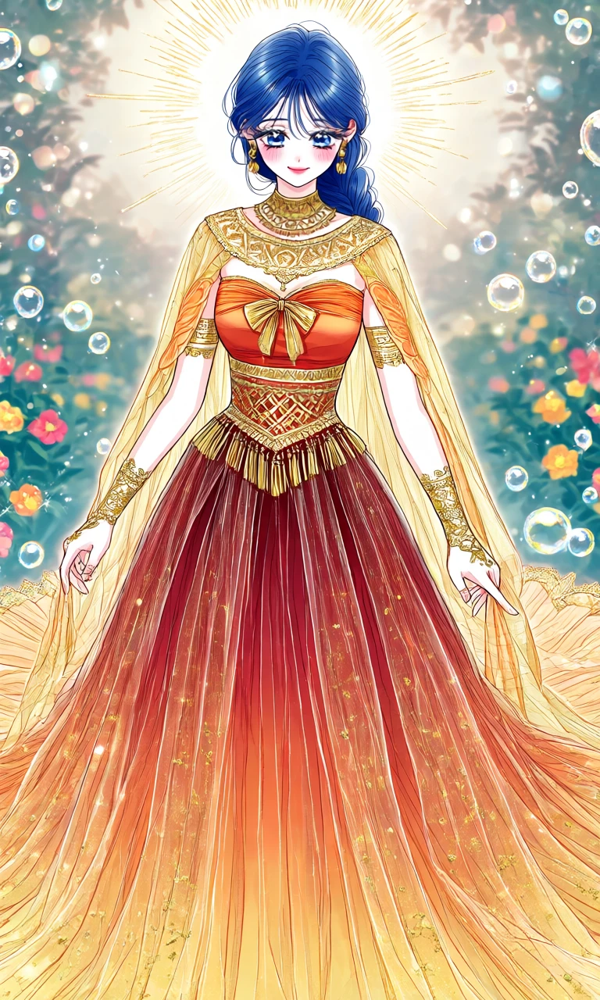
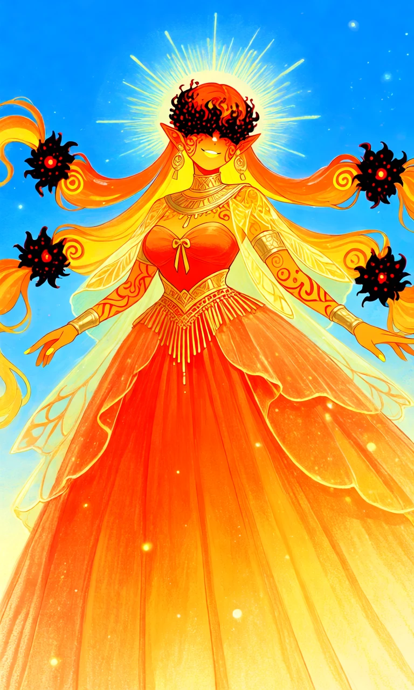

Ember Coronation

Outfit Prompt
The gown she is wearing is a warm ombré palette of red, orange, and gold starting with a deep crimson red at the top to a gold yellow on the bottom as well as accents in metallic gold for all embroidery, jewelry, and trim.
Overall shape of dress is an A-line ball gown with a very wide, sweeping train that spreads out dramatically on the floor. The skirt is full and pleated, creating volume and movement.
The dress' bodice is Fitted and structured, featuring a strapless sweetheart neckline with a prominent gold bow/knot detail at the center. The bust area is a rich orange-red, contrasting with the lighter gold tones above.
The dress' waist is defined by a wide, ornate gold waistband or belt with intricate geometric patterns and hanging fringe/tassels, emphasizing an hourglass figure.
The dress' skirt is long, flowing, and heavily pleated. The lower portion is solid and opaque in red-orange, while the upper skirt and overskirt are sheer and layered for a light, ethereal effect.
The dress' train is extremely long and dramatic, extending far behind the figure with the same ombre gradient.
Sheer overlays and cape: Delicate, translucent golden-yellow fabric drapes over the shoulders and arms like a soft cape or shrug, flowing down the sides and back. It adds softness and movement while revealing the arms and structured bodice underneath.
Embroidery and trim: Extensive metallic gold detailing throughout:
Intricate geometric and hieroglyphic-style patterns on the neckline, waistband, and cuffs.
A broad gold band just below the bust.
Delicate gold speckles or embroidery scattered across the sheer skirt layers.
The dress' sleeves and arms have no traditional sleeves, but the sheer yellow cape fabric with fairy wings like pattern in orange drapes over the upper arms. The forearms feature matching gold armbands/cuffs with detailed patterns, paired with elegant, elongated gloves or bare hands with gold accents.
A wide, ornate statement collar/necklace in gold with layered patterns.
Matching earrings and a choker-style element.
A sun shape halo behind her.
Outfit Examples



